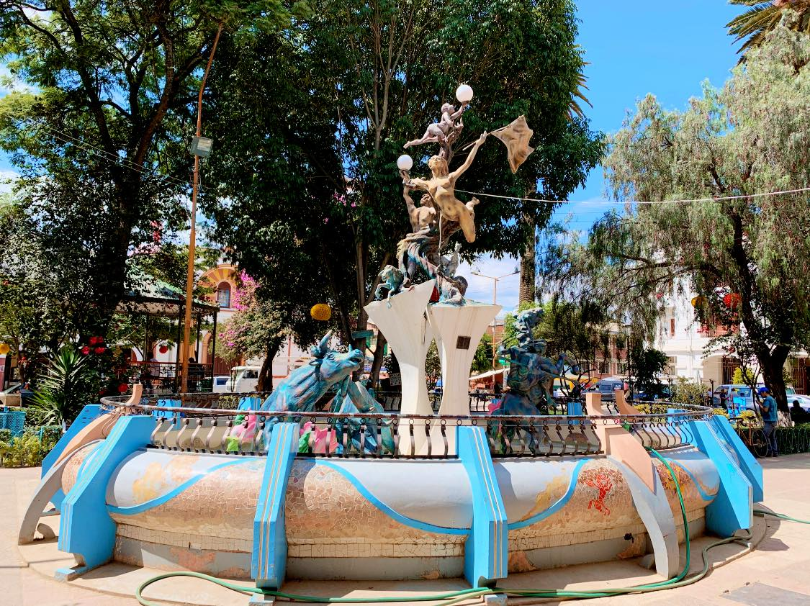

Información básica
La provincia de Tarata es conocida por su rica historia, cultura y paisajes naturales. Se encuentra ubicada en el departamento de Cochabamba, Bolivia, y es famosa por sus tradiciones y su arquitectura colonial.
Esta región es ideal para el turismo cultural, con lugares como la Plaza Principal, la Iglesia de San Pedro y los encantadores alrededores rurales.